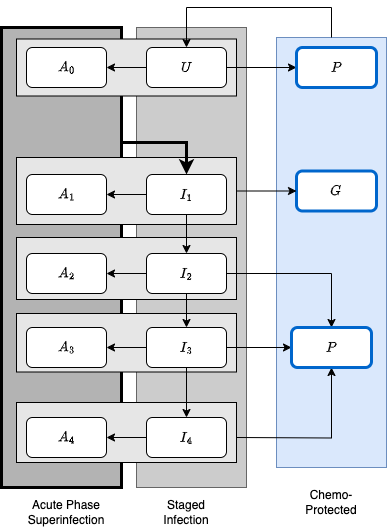

X-xde-workhorse.Rmd
suppressMessages(library(knitr))
suppressMessages(library(ramp.xds))
#suppressMessages(library(ramp.library))
library(deSolve)
library(ramp.library)
#devtools::load_all()Warning: workhorse is in
development.
In the following, we present a stage of infection (SoI) model for malaria infection that recognizes an important difference between the two major phases of an infection: the acute phase characterized by geometrically increasing parasite numbers; and the chronic phase characterized by fluctuating parasite densities. The model explicitly considers superinfection, which moves individuals from an infected state into a parallel set of states.
Uninfected individuals are either susceptible to infection \(U\) or chemoprotected and not susceptible to infection.
Some recently treated, chemoprotected individuals remain infectious \(G.\) The remainder are chemoprotected and not infectious, \(P.\)
There are four chronic infection stages: \(I_{1},\ I_{2},\ I_{3}\) and \(I_{4}\) .
There are five acute infection stages: four (\(A_{1},\ A_{2},\ A_{3},\ A_{4}\)) that correspond to an acute-phase infection concurrently infected with parasites in the chronic phase; and one (\(A_{0}\)) that corresponds to carrying an acute phase infection but being otherwise uninfected.
All acutely infected individuals transition into \(I_1\)

The variables are thus:
\(U\)
Chemoprotected states are \(P\) and \(G\)
Acute stages of infection: \(A_{0},\ A_{1},\ A_{2},\ A_{3},\ A_{4}\)
Chronic stages of infection: \(I_{1},\ I_{2},\ I_{3},\ I_{4}\)
These are:
\(r\) - the rate of recovery from infection
\(\sigma\) - treatment rate
\(h_{\tau}\) - rate at which immunity is acquired
\(\zeta_{U}\) - rate at which chemoprophylaxis is administered to uninfected individuals
\(\zeta_{A}\) - rate at which chemoprophylaxis is administered to individuals in acute phase of infection
\(\phi\) - rate at which individuals in acute phase move into chronic stage of infection
\(\zeta_{i}, i= 1,2,3,4\) - rate at which individuals in chronic stages of infection obtain chemoprophylaxis
\(p(w)\) - the peak of infection
\(\xi_{i},i=1,2,3,4\) - rate at which individuals move through the different chronic stages of infection
\(\delta_{I}\) - rate of loss of immunity
Active acute-phase infections become apparent after \(\tau\) days, and:
Uninfected
\[ \begin{array}{rl} \frac{dU}{da} &= r \sum_i I_i + \sigma (P + G) - (h_\tau + \zeta_U) U \\ \frac{dA_0}{da} &= r \sum_i A_i + h_\tau U - (\phi + \zeta_A + \zeta_U) A_0 \end{array} \] Chemoprotected
We are assuming that treatment as a result of an acute infection could leave a person infectious:
\[ \begin{array}{rl} \frac{dP}{da} &= \zeta_U (U + A_0) + \sum_{i\geq 2} \zeta_i I_i - \sigma P \\ \frac{dG}{da} &= \zeta_1 I_1 + \zeta_A \sum_i A_i - \sigma G \\ \end{array} \]
Infected
Where \(\phi\) is on the order of \(1/10 d\) and
At peak:
\[ \begin{array}{rl} \frac{dI_1}{da} & = p(w) \phi \sum_i A_i - (h_\tau + r + \xi_1 + \zeta_1) I_1 \\ \frac{dI_2}{da} & = (1-p(w)) \phi \sum_i A_i + \xi_1 I_1 - (h_\tau + r + \xi_2+ \zeta_2) I_2 \\ \frac{dI_3}{da} & = \xi_2 I_2 - (h_\tau + r + \xi_3 + \zeta_3) I_3 \\ \frac{dI_4}{da} & = \xi_3 I_3 - (h_\tau + r + \zeta_4) I_4 \\ \end{array} \]
Past peak, for \(n \in 2,3,4\):
\[ \begin{array}{rl} \frac{dA_1}{da} & = h_\tau I_1 - \phi A_1 - (\zeta_A + r + \zeta_1) A_1 \\ \frac{d A_n}{da} &= h_\tau I_n - \phi A_n - (\zeta_A + \zeta_n) I_n\\ \end{array} \] Immune Tracking
\[ \begin{array}{rl} \frac{d w_0}{da} &= h_\tau \\ \frac{d w_i}{da} &= h_\tau - \delta_I w_i \\ \end{array} \]
#devtools::load_all()
wh <- xds_setup(dlay = 'dde',
Xname = "workhorse",
HPop=1000,
Lname = "trivial",
Lopts = list(
Lambda = 3000,
season = function(t){1+sin(2*pi*t/365)}
)
)
wh <- xde_solve(wh, Tmax = 5*365, dt=10)
wh1 = wh
wh1$Xpar[[1]]$zeta_1 = 0.02
wh1 <- xde_solve(wh1, Tmax = 5*365, dt=10)
xds_plot_X(wh)
xds_plot_X(wh1, llty=2, add=FALSE)
time = wh$outputs$time
with(wh$outputs$orbits$XH[[1]],{
A = A0+A1+A2+A3+A4
I = I1+I2+I3+I4
plot(time, U + P + G, type = "l", ylim = range(0, H), col = "darkblue")
lines(time, A+I, col = "darkred")
lines(time, A, col = "purple")
lines(time, I-I1, col = "orange")
lines(time, P+G, col = "darkgreen")
})
with(wh1$outputs$orbits$XH[[1]],{
A = A0+A1+A2+A3+A4
I = I1+I2+I3+I4
lines(time, U + P + G, col = "darkblue", lty=2)
lines(time, A+I, col = "darkred", lty=2)
lines(time, A, col = "purple", lty=2)
lines(time, I-I1, col = "orange", lty=2)
lines(time, P+G, col = "darkgreen", lty=2)
})